Table of Contents
1000 sq ft Starter HomeTop
The first design assignment was to make a house to sleep 4 people under 1000 square feet. I used the online deigner Homestyler as a floorplan and 3D model, learning how to use the software along the way. A challenge was making it less than 1000sq ft and not be too crowded with the bathroom opening to the kitchen, trying to make a living room and dining room, etc. In the end I had the front door open to a central area which has a dining table, couch, TV, bookshelf, and chair. The kitchen is accessed by a wall opening and has many appliances that I somehow managed to cram into that space. The bathroom has a walk-in shower, and was probably a waste of space seeing how big it is. The bedrooms exist. Above are screenchots and renders of the home.
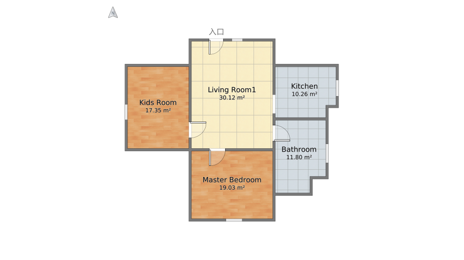 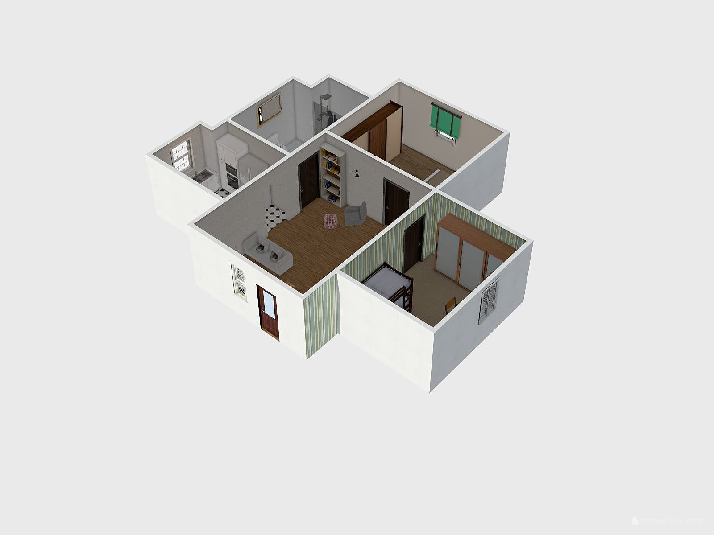 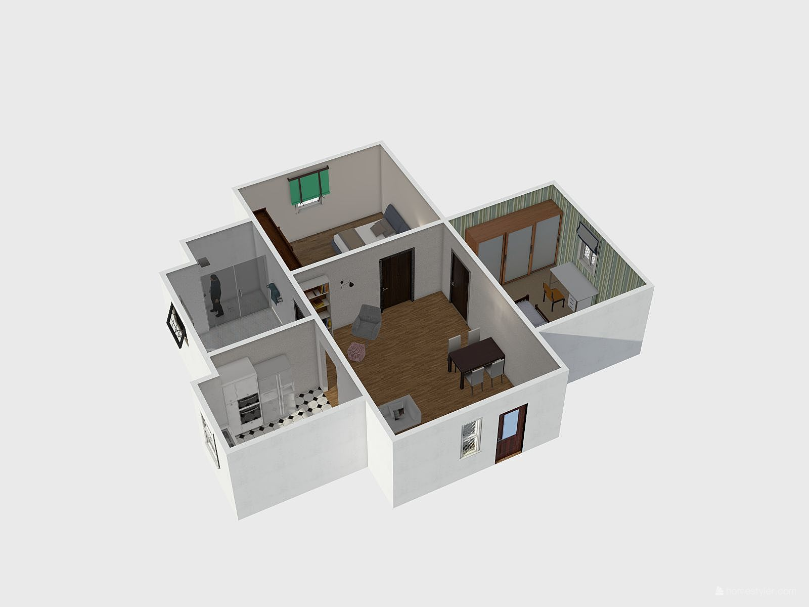 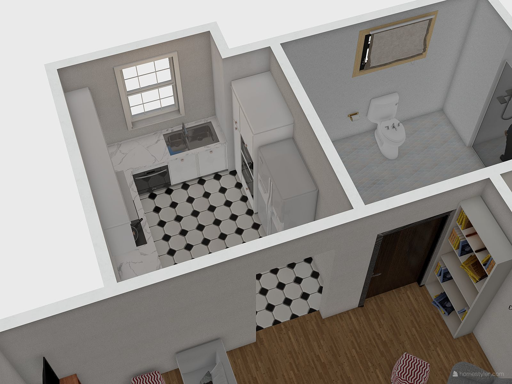 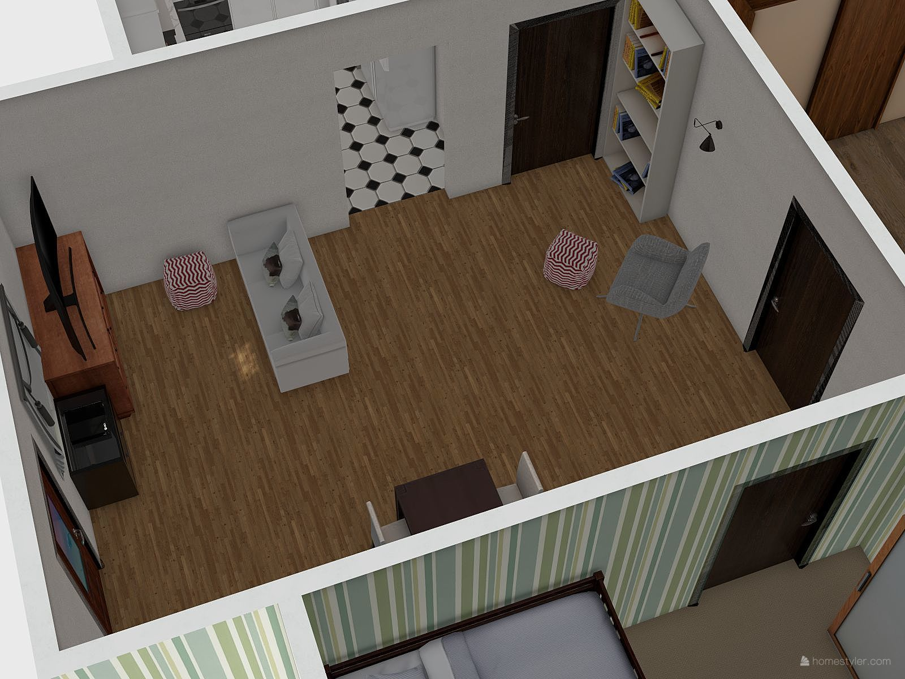 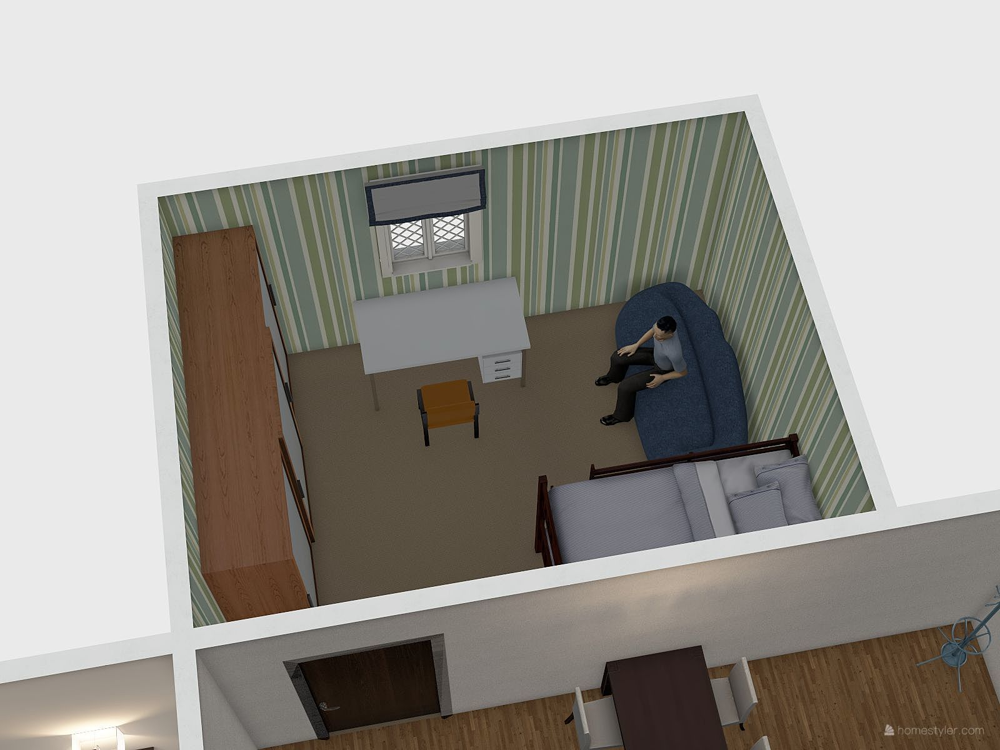 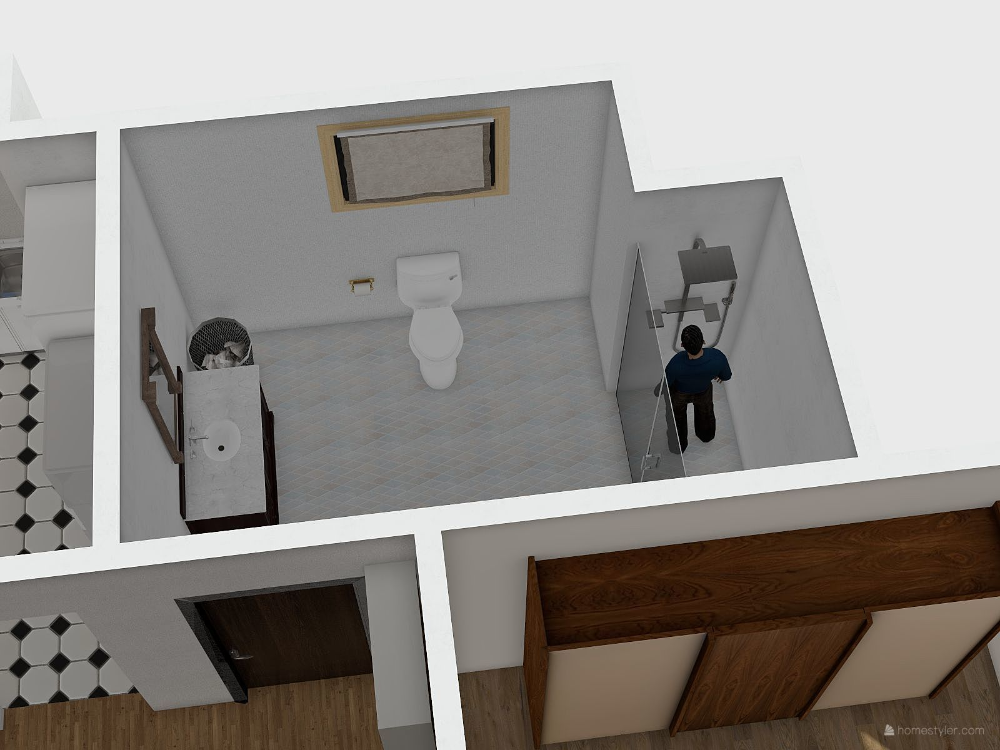
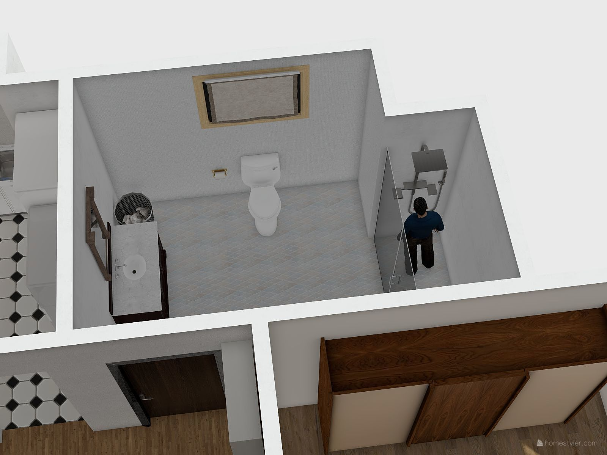
SketchUp Roof StylesTop
A project to warm up for what was to come was to create scenes of the roofs we styled in SketchUp and label the roofs with the corresponding names of the style. My roofs are made to look like fairly common styles: Pavilion Hipped, Mansard, Gambrel, Cross Gable, Hipped, Salt Box, Side Gable, and Front Gable. Above is a video of the labeled roof styles. I also included a link to download the SketchUp file below.
Benicia Affordable Housing ProjectTop
Our class assignment was to find a lot of land in an assigned city, design a house to go on the land, make an interior design for one house, render the houses and the interior design, landscape the land, and make a budget for it all. One person in our group was assigned one of four jobs (visuals, interior design, landscaping, and budget) and I was assigned landscaping. The house style our group picked was shed, so we had to design our houses after that style. We used an online software to design the floor plan which we then imported into SketchUp. From that point we built the walls, roofs, windows, and doors. My job was landscaping the lot, so I made the ground flat, added a street, and added some shrubbery. The things I included below is a 3D model of the house, video of the lot, a slide show for our project, and images of my house.
Fusion KeychainTop
Using a 3D modeling software Fusion 360, we had to make a keychain based off the first drawing shown below while only changing the name and length of the keychain.
 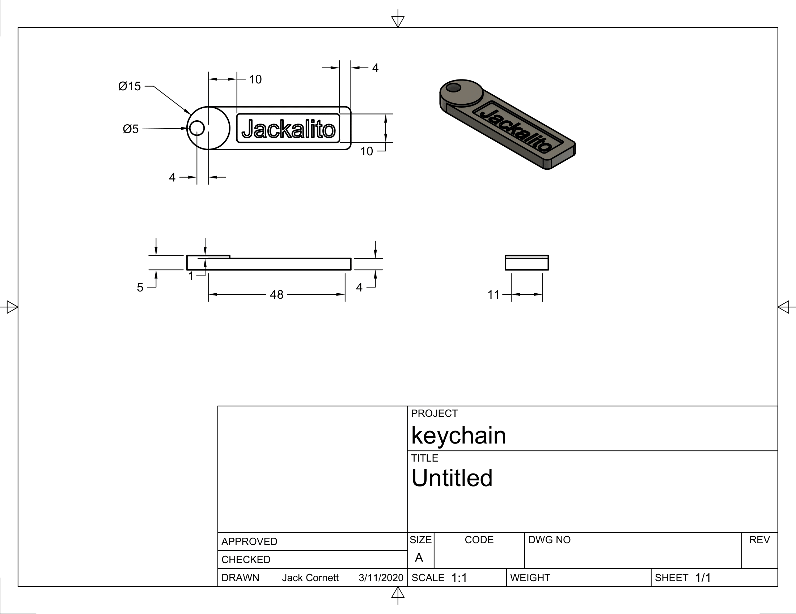
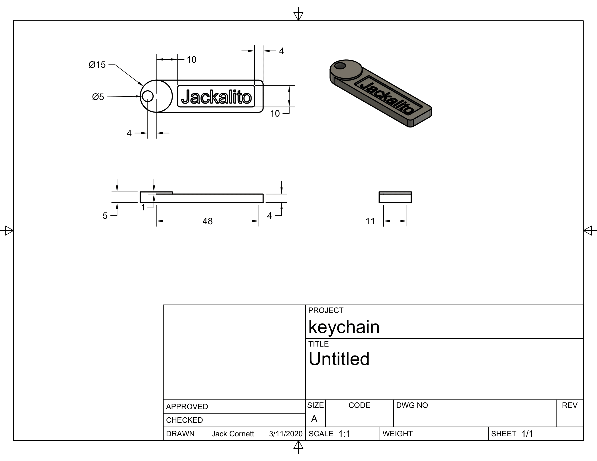
Simon's RobotTop
As a deeper introduction to Fusion360, we followed a video tutorial on making a robot originally made by an older student named Simon (hence the title "Simon's Robot). We each personalized out robots so no two were the same, but kept the basic Android logo form. I made my robot out of sand-blasted aluminum for the body and head, the arms are made out of sand-blasted brass, and the horns are made out of regular polished brass.
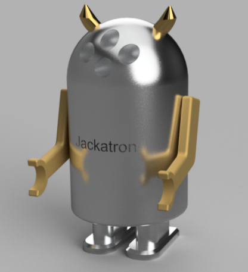 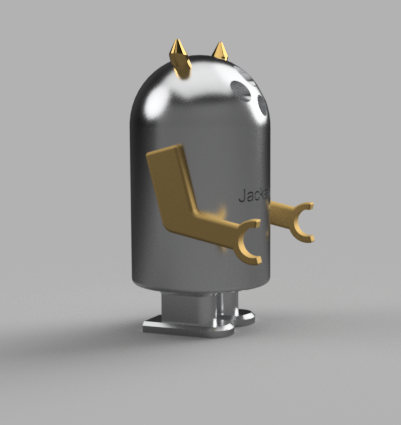 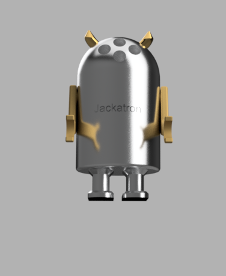Fidget SpinnerTop
With our skill in Fusion, we made fidget spinners to be cut out on a laser cutter. My original design was going to be a Reuleaux triangle, but as I was cutting parts of the circle off, I noticed this new shape which was mush less bland than the original design I had in mind, so I went with it. It's a cool take on the original fidget spinner with the 3 arms protruding from the center. Because my design was a bit small I added holes for 1/4"-20 size nuts to add some weight. 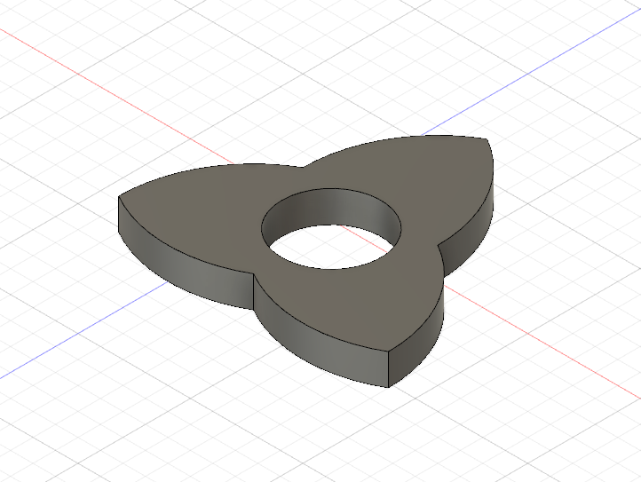 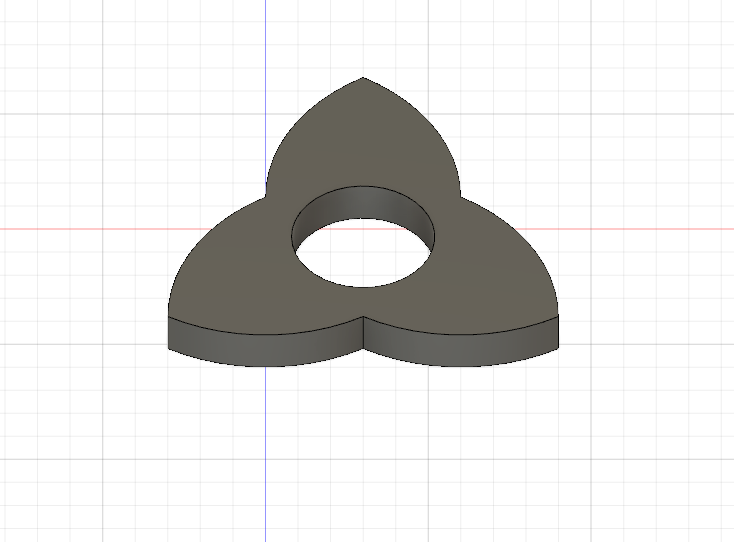 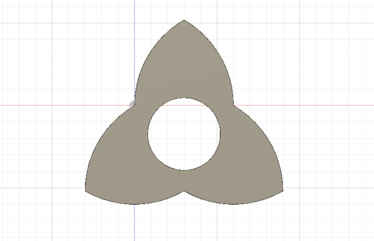 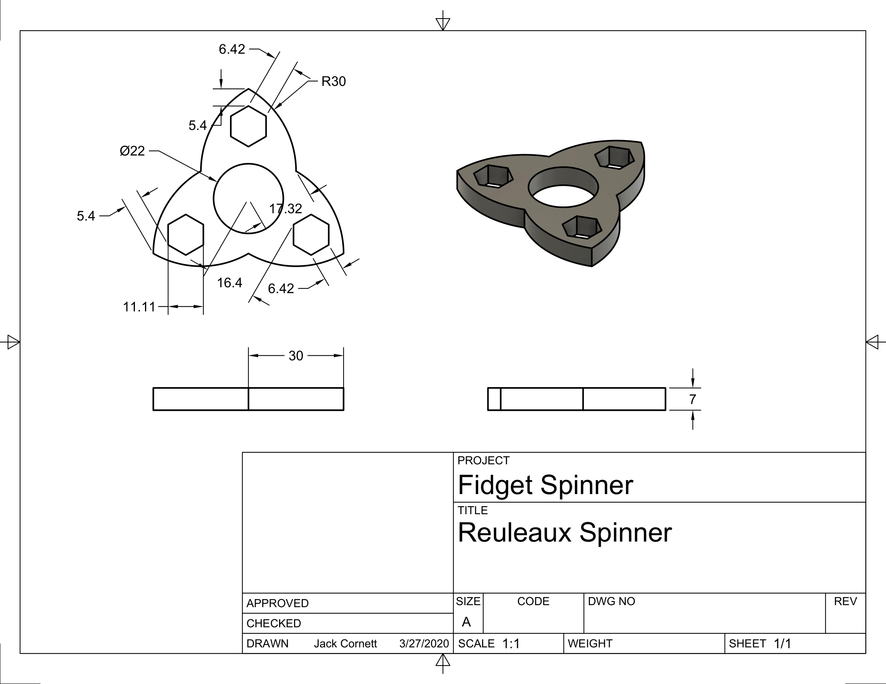
Isometric Projection ModelsTop
The next lesson was to draw isometric projections of certain models given the front and top views. We drew the iso projections on paper, but then turned to Fusion 360 to 3D model them. Below are the 6 models as well as drawings we made from just a front and top view.